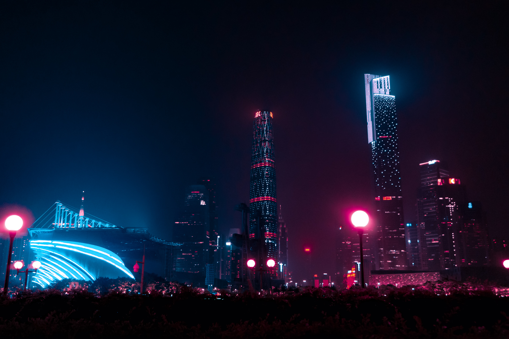

Exemplos de Imagens




Sobre Nós
Esta página serve para procurar as melhores imagens de acordo com a sua pesquisa/preferência. Serão selecionadas as imagens com melhor qualidade possivel, esperemos que goste e disfrute destas imagens.